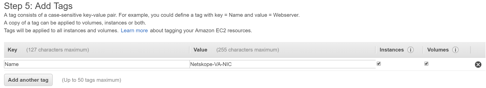
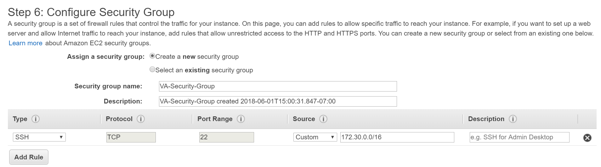

Provision the Virtual Appliance on AWS
Netskope's Virtual Appliance can be run on Amazon's EC2 instance using the VA AMI.
To provision the Virtual Appliance on AWS, you must do the following:
Access the VA AMI
Contact your SE or TSM with the below information to get the latest VA AMI in your AWS account:
Tenant
Customer
AWS Account ID
To access the VA AMI, go to Amazon's EC2 Management Console on AWS and navigate to Images. Click AMIs, and then select Private Images on the Owned by me dropdown list.
Currently, the images are only available in the US-West-1 region.
To access the image in a different region,
Select the Netskope VA AMI and click Actions > Copy AMI.
On the Copy AMI screen, select the Destination region. Provide a name and description for the image. Click Copy AMI.
Allocate an Elastic IP
The elastic IP when assigned to the VA AMI instance will be the public IP address of the instance. The elastic IP enables you to access the instance over the internet. You must allocate an elastic IP address and attach the IP address to a network interface.
In the EC2 Dashboard, navigate to Network & Security and click Elastic IPs.
Click Allocate new address > Allocate.
Alternatively, you can associate an existing elastic IP when choosing or creating a network interface. See, Choose or create a network interface.
Choose or create a network interface
In the EC2 Dashboard, navigate to Network & Security on the EC2 Dashboard in the left pane. Click Network Interfaces.
Depending on your intended setup, choose up to three available network interfaces in your subnet that can be assigned to Netskope's VA instance. If there are no available interfaces, create new interfaces in your subnet by clicking Create Network Interface.
On the Create Network Interface screen, select a subnet and security group. Click Yes, Create.

On the Network Interfaces page, provide a name for the newly created network interface.
Assign the Elastic IP to a network interface
On the Network Interfaces page, select a network interface that will be assigned to Netskope's VA instance and click Actions > Associate Address.
On the Associate Elastic IP Address screen, select an address and click Associate Address.
A public IP address is now assigned to the network interface.
Launch the VA AMI instance
Click Instances > Launch Instance. In the left pane, click My AMIs to choose the VA AMI.
In the left pane, under Ownership, select Shared with me and then select Netskope VA AMI.
Choose a general purpose m4.2xlarge instance type with at least 8 vCPUs and minimum of 32 GiB memory. Click Next: Configure Instance Details.

On the Configure Instance Details page, choose your Network and a Subnet in the same availability zone as your available network interfaces. Set Auto-assign Public IP to Use subnet setting (Enable).

Under Network Interfaces, assign the network interface that has an associated elastic IP address to eth0. Click Add Storage.
Set the volume of storage on the root device. The minimum storage required to run the instance is 275 GiB. Click Next: Add Tags.
Add a tag to categorize your instance. Enter a key and value. When finished, click Next: Configure Security Group.
Assign a security group to control the traffic to your instance. You can create a new security group or select an existing group.
When creating a new security group, select the SSH connection type to allow SSH-only inbound access for device configuration. Specify the port based on the configuration of the appliance. For more information on the required ports for various configurations, see Configure the Interfaces.
Click Review and Launch. Review your instance setup and click Launch.
Set a key pair for your instance.
Note
Currently, you do not need an authentication key to connect to your instance since key pair based SSH is not enabled on the VA AMI. Although, key pair based SSH may be supported in a future release.
Select the acknowledgment below and click Launch Instances.
Note
The instance takes around 15 minutes to initialize.
To view the console, go to the Instances page and select your instance then click Actions > Instance Settings > Get Instance Screenshot.
Once the instance is up and running, you can use an SSH client to connect to the appliance by entering the public IP address.
Note
To configure the appliance as a Log Parser, see Login to the Appliance.
To configure the appliance as a Secure Forwarder, you must add and configure additional interfaces. For information, see Configure additional Interfaces with a static IP.
Attach two additional network interfaces to the VA instance
Optionally, if you want to configure additional interfaces on the appliance, you can attach additional network interfaces to the VA instance.
You must stop running the instance before attaching the network interfaces. In the Instances page, select the instance and click Actions > Instance State > Stop.
With the instance selected, click Actions > Networking > Attach Network Interface and attach two more interfaces.
In the instance description, verify that the instance now has three network interfaces and start the instance. Click Actions > Instance State > Start.
After the instance initializes, check the instance description to verify that the eth0 interface has an elastic IP.
Use an SSH client to connect to the appliance by entering the public IP address.
The appliance is configured to use DHCP on the default dp2 interface. Depending on your use case, you can choose to configure a static IP on dp2 and configure additional interfaces. For more information, see Configure the Interfaces.